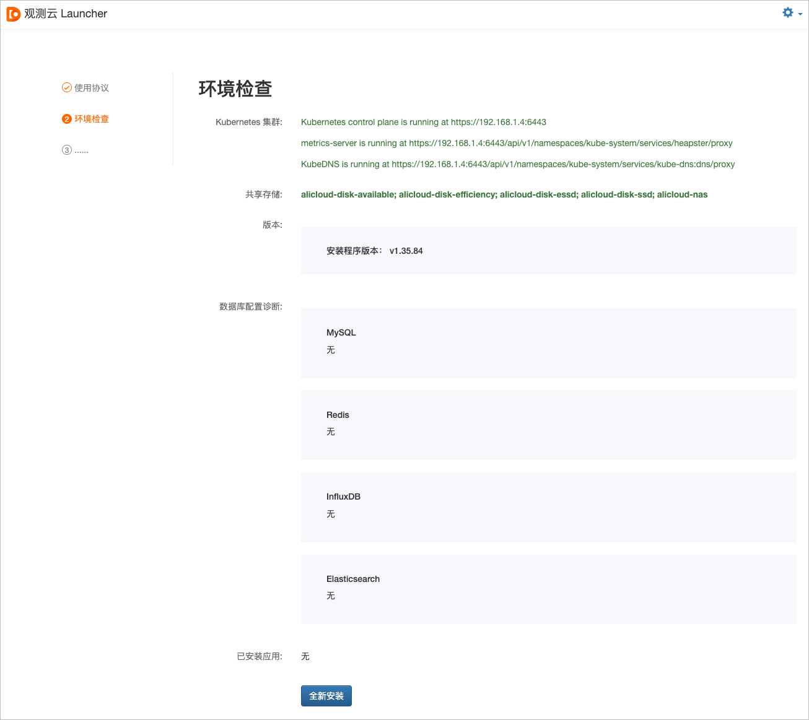
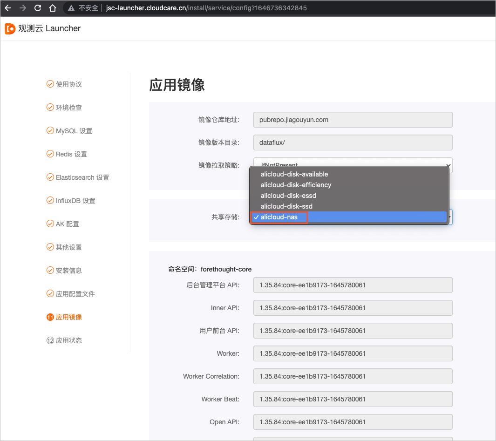

一键部署观测云
概述
观测云是⼀个具备可观测性的统⼀实时监测平台，可帮助客⼾快速实现系统可观测，是国内⾸家SaaS化可观测性产品，为客⼾的业务⻓时间在线不中断，提供数据化⼿段的全链路保障服务。本文介绍部署观测云服务实例的详细说明。
观测云服务器资源
在部署服务实例前，需要准备如下表所示的服务器资源。
说明:
- 资源清单中用于部署DataWay的两台ECS不在资源编排中，可以在安装部署完成后，自行创建ECS来部署DataWay。
- 最低配置只适用于POC场景部署，只作为功能验证，不适合作生产环境使用。
- 推荐配置适合InfluxDB少于15万时间线，Elasticsearch少于70亿⽂档数（⽇志、链路、⽤户访问监测、事件等⽂档数总和）的数据量场景使⽤。
- 作为生产部署以实际接入数据量做评估，接入的数据量越多，InfluxDB、Elasticsearch的存储与规格配置相应也需要越⾼。
| 资源 | 规格（最低配置） | 规格（推荐配置） | 数量 | 备注 |
|---|---|---|---|---|
| ACK | 标准托管集群版 | 标准托管集群版 | 1 | 无 |
| NAS | 200 G（容量型） | 200 G（容量型） | 1 | ACK集群数据持久化 |
| NAT网关 | 小型NAT网关 | 小型NAT网关 | 1 | ACK集群出网使用 |
| SLB | 性能保障型 | 性能保障型 | 2 | 在Kubenetes Ingress前 |
| ECS | 4核8 G（单系统盘80 GB） | 8核16 G（单系统盘120 GB） | 4 | 部署阿里云ACK托管版集群 |
| ECS | 2核4 G（单系统盘80 GB） | 4核8 G（单系统盘120 GB） | 2 | 部署DataWay |
| RDS | 1核2 G 20 GB | 2核4 G 50 GB（三节点企业版） | 1 | MySQL 5.7 |
| Redis | 2 G | 4 G（标准主从版双副本） | 1 | 版本：4.0 |
| InfluxDB | 4核16 G 200 GB | 8核32 G 1 T（集群版） | 1 | 版本：1.7.x |
| Elasticsearch | 4核16 G 500 GB（2节点） | 16核64 G 2 T（3节点） | 1 | 版本：7.4+（推荐7.10） |
| 云通信 | 无 | 无 | 1 | 开通邮件服务 |
| 域名 | 无 | 无 | 1 | 主域名需备案，一个主域名名下的8个子域名 |
| SSL证书 | 通配符域名证书 | 通配符域名证书 | 1 | 非必选 |
RAM账号所需权限
观测云服务需要对ECS、CS、SLB等资源进行访问和创建操作，若您使用RAM账号创建服务实例时，需在创建服务实例前，对使用的RAM账号添加相应资源的权限。添加RAM权限的详细操作，请参见为RAM用户授权。
| 权限策略名称 | 备注 |
|---|---|
| AliyunCSFullAccess | 管理容器服务（CS）的权限 |
| AliyunNATGatewayFullAccess | 管理NAT网关（NAT Gateway）的权限 |
| AliyunNASFullAccess | 管理文件存储服务（NAS）的权限 |
| AliyunSLBFullAccess | 管理负载均衡服务（SLB）的权限 |
| AliyunECSFullAccess | 管理云服务器服务（ECS）的权限 |
| AliyunVPCFullAccess | 管理专有网络（VPC）的权限 |
| AliyunRDSFullAccess | 管理云数据库服务（RDS）的权限 |
| AliyunKvstoreFullAccess | 管理云数据库Redis版（Kvstore）的权限 |
| AliyunHiTSDBFullAccess | 管理高性能时间序列数据库（TSDB）的权限 |
| AliyunElasticsearchFullAccess | 管理Elasticsearch的权限 |
部署流程
部署步骤
单击部署链接，打开服务实例部署页面，完成部署。
部署参数说明
⽤户在创建观测云服务实例过程中，需要配置服务实例信息，详细的操作步骤请参⻅创建私有部署服务实例。下⾯介绍创建观测云服务实例需要配置的详细参数及注意事项：
在后续安装Launcher观测云时，需要用到创建服务实例时，设置的主机和中间件的账号密码。因此在创建服务的过程中，需要您记录主机和中间件的账号密码。
- 地域及可用区
根据实际需要选择部署观测云的地域。例如，可以跟您被监测的应用服务放在同一地域，减少跨地域的数据网络传输。
-
观测云主域名 配置用于访问部署完成后的观测云的主域名，观测云部署需要用到此主域名下的8个子域名，具体子域名将会在后面的安装引导程序中配置。
后续配置中，以my-guance.com作为示例主域名。 -
Kubernetes集群配置 ⾄少需要4个Kubernetes Worker节点，具体配置，请参考观测云服务器资源。
- ECS跳板机配置 用于执行部署操作命令的操作机，按量计费，在操作完毕后可以释放。
- 各种数据库中间件配置 以下为观测云平台依赖的几种数据库中间件，在配置过程中，自行记录各个数据库的账号及密码，在后续安装引导配置时需要使用。
- MySQL 按资源清单选择实例规格，一般可选择默认实例规格。实例规格的详细信息，请参见主实例规格列表。
- Redis 按资源清单选择实例规格，不要选择集群版Redis。实例规格的详细信息，请参见规格查询导航。
- InfluxDB 按资源清单选择实例规格。
- Elasticsearch 按资源清单选择实例规格，实例规格的详细信息，请参见Elasticsearch实例规格表。
绑定域名
-
在本地操作机上的hosts中添加Launcher域名绑定到Kubernetes Ingress的前置SLB公网IP，可以在控制台 负载均衡 实例列表页面找到名为Kubernetes.do.not.delete前缀的SLB实例，获取它的公网IP。 建议不要将Launcher安装引导程序的域名解析到公网，只在操作机上进行本机绑定访问即可。hosts中的域名绑定如下。
<SLB 公⽹IP> launcher.my-guance.com -
其他所有子系统域名绑定，其他所有需要的默认子域名有（在安装时可以修改默认域名）：
- dataflux.my-guance.com
- df-api.my-guance.com
- df-management.my-guance.com
- df-management-api.my-guance.com
- df-func.my-guance.com
- df-openapi.my-guance.com
- df-static-res.my-guance.com
- df-kodo.my-guance.com（此域名不要做公⽹解析）
安装观测云
-
安装引导
访问http://launcher.my-guance.com，打开安装引导程序页面，根据引导步骤完成安装。安装引导步骤的详细信息，请参见应用安装引导步骤。  在安装过程中， 应用镜像 页面中的 共享存储 请选择alicloud-nas。 
-
安装完成。
后续步骤
观测云产品安装完毕后，您还需要安装一个DataWay数据网关，DataKit才能接入数据。安装DataWay的详细操作，请参见如何开始使用观测云。
安装完成后，可以访问以下站点地址：
- 用户前台地址：http://dataflux.my-guance.com
- 管理后台地址：http://df-management.my-guance.com
- func平台：http://df-func.my-guance.com